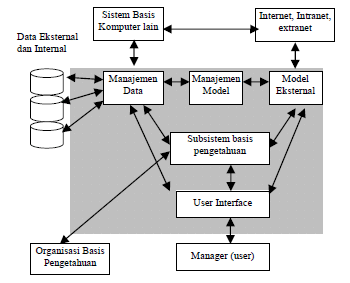
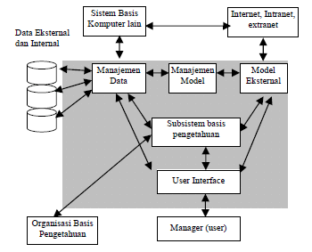

Sistem Pendukung Keputusan Pemilihan Beasiswa Doktor untuk Dosen Potensial dengan Metode AHP
Artikel ini bertujuan untuk mengganti metode Simple Multi Attribute Rating Technique (SMART) yang digunakan dalam pemilihan dosen potensial untuk beasiswa doktoral menjadi metode Analytical Hierarchy Process (AHP). Peran dosen dalam dunia pendidikan tinggi sangat penting, terutama untuk meningkatkan kualitas akademik dan kelembagaan universitas. Namun, pemilihan penerima beasiswa yang dilakukan secara manual masih sering subjektif dan memerlukan pendekatan yang lebih terstruktur. AHP dipilih karena kemampuannya untuk membandingkan kriteria secara berpasangan dan memastikan konsistensi penilaian antar kriteria, menghasilkan keputusan yang lebih objektif dan akurat. Dengan menggantikan SMART dengan AHP, proses pemilihan penerima beasiswa dapat dilakukan lebih transparan dan terukur.
### Pendahuluan:
Dalam dunia pendidikan tinggi, dosen memiliki pengaruh besar terhadap kualitas lulusan yang dihasilkan. Untuk meningkatkan kompetensi dosen, universitas sering kali memberikan beasiswa doktoral kepada dosen potensial. Namun, proses seleksi penerima beasiswa yang dilakukan secara manual dapat menghasilkan keputusan yang subjektif, karena pengambilan keputusan bergantung pada penilaian individu terhadap kriteria yang digunakan. Oleh karena itu, pengembangan Sistem Pendukung Keputusan (SPK) berbasis web dengan metode Analytical Hierarchy Process (AHP) menjadi solusi yang tepat untuk meminimalisasi subjektivitas dan meningkatkan objektivitas dalam pemilihan dosen yang layak mendapatkan beasiswa.

Metodologi:
Metode AHP digunakan untuk membandingkan setiap kriteria secara berpasangan guna menentukan bobot kepentingan relatif antar kriteria. AHP lebih cocok dibandingkan SMART karena memungkinkan pembanding antar kriteria dilakukan secara berpasangan dengan skala 1 hingga 9. Tahapan dalam penerapan AHP adalah sebagai berikut:
- 1. Identifikasi Kriteria: - Kriteria yang digunakan sama seperti pada metode sebelumnya, yaitu Masa Kerja, Pengajaran, Kualifikasi Pendidikan, Penelitian, Pengabdian, Jabatan Fungsional, Publikasi Jurnal, dan NIDN.
- 2. Perbandingan Berpasangan: - Setiap kriteria dibandingkan satu sama lain dengan skala 1-9. Misalnya, "Masa Kerja" mungkin dianggap lebih penting daripada "Pengajaran", sehingga "Masa Kerja" mendapat nilai 3 dibanding "Pengajaran". Hasil perbandingan ini dimasukkan ke dalam Matriks Perbandingan Berpasangan.
- 3. Normalisasi Bobot: - Setelah perbandingan berpasangan dilakukan, bobot untuk setiap kriteria dihitung dengan membagi setiap nilai dalam matriks dengan jumlah total kolom, menghasilkan Matriks Normalisasi. Rata-rata dari setiap baris kemudian dihitung untuk menentukan bobot akhir dari setiap kriteria.
- 4. Menghitung Konsistensi: - AHP juga memiliki mekanisme untuk mengukur konsistensi dalam pengambilan keputusan. Rasio Konsistensi (CR) dihitung untuk memastikan apakah perbandingan kriteria sudah cukup konsisten. CR yang kurang dari 0.1 menunjukkan bahwa perbandingan dapat diterima.
- 5. Evaluasi Alternatif: - Setelah bobot kriteria ditentukan, langkah selanjutnya adalah mengevaluasi alternatif (dosen) terhadap setiap kriteria. Setiap dosen dinilai berdasarkan kriteria seperti Masa Kerja, Publikasi Jurnal, dsb. Setiap alternatif (dosen) kemudian diberikan skor dan dihitung berdasarkan bobot kriteria.
 

Hasil dan Pembahasan:
Dari hasil perhitungan menggunakan AHP, ditemukan bahwa dua dosen yang paling berpotensi menerima beasiswa doktor adalah Yuanita, M.Si dengan skor 0.7342 dan Khairuddin Tampubolon, M.Si dengan skor 0.6311. Skor ini dihasilkan dari proses perbandingan antar kriteria dan penilaian terhadap masing-masing dosen, di mana kriteria Publikasi Jurnal dan Pengajaran memiliki bobot yang lebih tinggi karena dianggap lebih relevan dalam konteks peningkatan akademik. AHP memungkinkan evaluasi yang lebih detail dan konsisten dibandingkan SMART. Kelebihan lain dari AHP adalah kemampuannya mengidentifikasi inkonsistensi dalam penilaian, sehingga keputusan yang diambil bisa lebih dipertanggungjawabkan. Ini berbeda dengan metode SMART yang lebih sederhana tetapi kurang teliti dalam penilaian perbandingan antar kriteria.
Kesimpulan:
Penggantian metode SMART dengan AHP dalam pemilihan beasiswa doktoral untuk dosen potensial memberikan manfaat yang signifikan. AHP memungkinkan perbandingan berpasangan antar kriteria, meningkatkan objektivitas, dan memberikan perhitungan yang lebih konsisten. Hasilnya adalah pemilihan dosen yang lebih transparan dan dapat dipertanggungjawabkan. Yuanita, M.Si dan Khairuddin Tampubolon, M.Si berhasil terpilih sebagai kandidat dengan skor tertinggi, menunjukkan bahwa AHP efektif dalam menentukan kandidat beasiswa berdasarkan berbagai kriteria yang kompleks.
Pradipta, R. A., Wintoro, P. B., & Budiyanto, D. (2022). Perancangan Pemodelan Basis Data Sistem Informasi Secara Konseptual dan Logikal. Jurnal Informatika dan Teknik Elektro Terapan, 10(2).